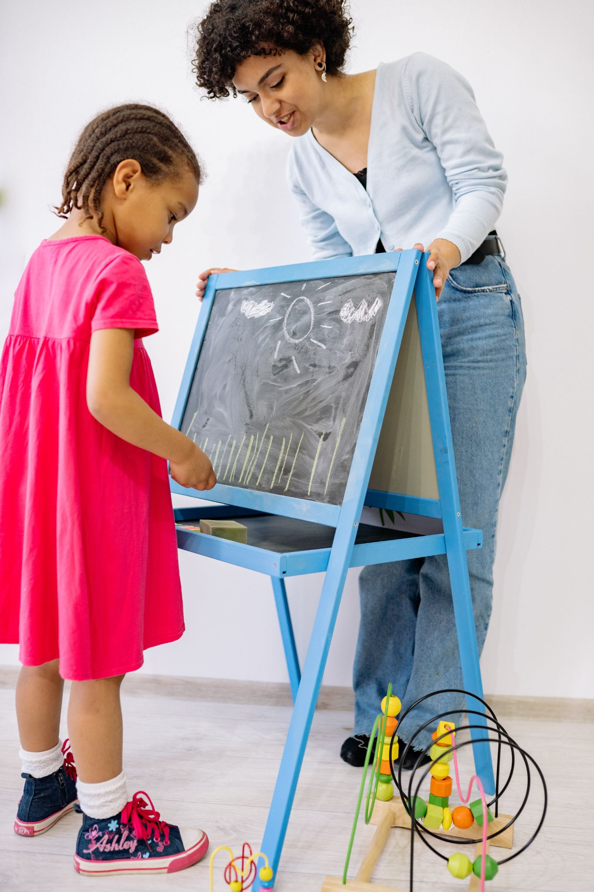
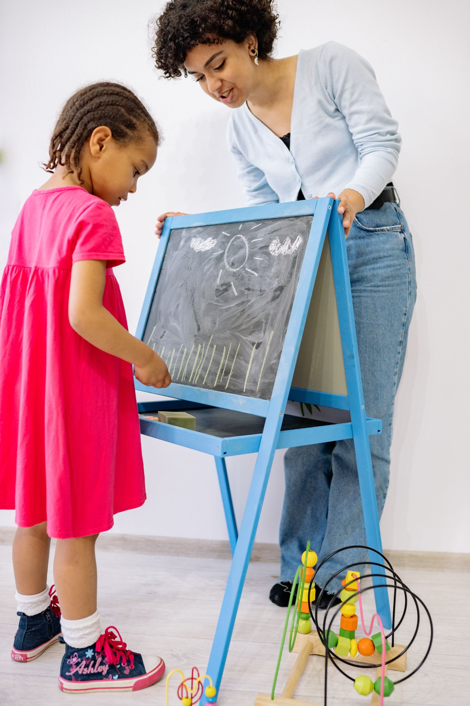

What is Applied Behavior Analysis (ABA)?
“Applied behavior analysis (ABA) is a science that uses principles of learning and motivation that have come from decades of scientific research to solve problems of behavior that matter to society." (Tarbox & Tarbox, 2017)
If you are a parent, friend, or relative of a child with special needs or a child who is normally developed but who has very challenging behavior, it is likely that you have asked yourself on repeating occasions: why does my child behave like that, and what can I do about it? I would also imagine that most of your answers are ascribed to circular reasoning: he does it because he is autistic, he has ADHD, or it is due to some other diagnosis.
ABA does not deny the value of a diagnosis but rather finds the ‘why’ in another domain: The environment. In other words, we would not justify a tantrum with an immature or undeveloped brain and so wait or hope that he outgrows phase. Applied behavior analysis believes and works on the basis that every behavior has a purpose in one’s environment, and the behavior will only survive if that purpose is fulfilled.
ABA scientific approach has been successfully used among different populations with a special impact within the ASD community. More than 1000 published studies support ABA as an evidence-based treatment for autism. (National Autism Center, 2015)
 

LTW focuses on Early Intensive Behavioral Intervention (EIBI) where learners start our services at an early age (2-6 years old). Research has shown that this treatment approach produces the largest gains when done consistently." (Tarbox & Tarbox, 2017)
We believe that every child with autism is able to learn- perhaps at different levels and speeds, based on individual characteristics, but important gains can be made when a combination of skills acquisition and reduction of challenging behaviors is included within a treatment plan. Our intervention primarily targets communication, social, and self-help skills to either boost the current client’s abilities or replace maladaptive behaviors.
LTW’s services are provided in our learner’s homes, schools, and communities. In this way, we involve his/her support system within our treatment which enhances the maintenance and generalization of the intervention results.